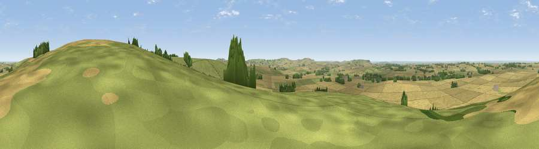

Viewpoint near Winterbourne Monkton
#15175 in England · top 27% of its area beats it · near Winterbourne MonktonThe view, rendered

A 360° render of this exact spot computed from the terrain model, tree cover and land cover — summer colours, afternoon light, calibrated against photographs of famous viewpoints. Real trees, hedges and buildings will differ in detail.
The panorama
Grey silhouette: terrain skyline in each direction (720 bearings, Earth curvature and refraction included). Dashed green: skyline with trees (+15 m) and buildings (+8 m) as obstacles. Blue strip: how far the ground is visible on each bearing.
Where the view opens
Wedge length = distance to the farthest visible ground on that bearing (vegetation-aware). Rings at 10, 25 and 50 km.
What fills the view
66% cropland · 30% grassland · 4% woodland ·
Angular shares of the visible panorama (visual magnitude), not map area. Landscape diversity 0.35 (0–1 Shannon).
Key numbers
More beautiful places nearby
The staircase of upgrades: each row has a higher view potential than everything closer. Driving times are estimates from straight-line distance, calibrated against real road routing — check an actual route before setting out.
| Place | Direction | Drive | Score |
|---|---|---|---|
| Viewpoint near Winterbourne Bassett | NNE · 2 km | ~5 min | 61.5 |
| Hackpen Hill | NNE · 2 km | ~5 min | 61.7 |
| Viewpoint near Broad Hinton | NNE · 4 km | ~9 min | 65.7 |
| Viewpoint near Broad Town | NNW · 6 km | ~13 min | 66.9 |
| Viewpoint near Cherhill | WSW · 8 km | ~15 min | 71.2 |
| Viewpoint near Alton Priors | S · 9 km | ~17 min | 72.5 |
| Viewpoint near Allington | SSW · 9 km | ~18 min | 75.6 |
| Martinsell viewpoint | SE · 11 km | ~20 min | 77.3 |
51.45249, -1.83121 · source: screening · position refined by local search. Computed location — check access rights before visiting.